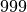
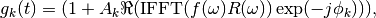
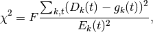
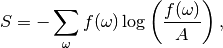
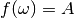
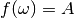
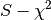
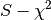

MuonMaxent dialog.
Table of Contents
| Name | Direction | Type | Default | Description |
|---|---|---|---|---|
| InputWorkspace | Input | Workspace | Mandatory | Raw muon workspace to process |
| InputPhaseTable | Input | TableWorkspace | Phase table (initial guess) | |
| InputDeadTimeTable | Input | TableWorkspace | Dead time table (initial) | |
| GroupTable | Input | TableWorkspace | Group Table | |
| GroupWorkspace | Input | Workspace | Group Workspace | |
| FirstGoodTime | Input | number | 0.1 | First good data time |
| LastGoodTime | Input | number | 33 | Last good data time |
| Npts | Input | number | Mandatory | Number of frequency points to fit (should be power of 2). Allowed values: [‘256’, ‘512’, ‘1024’, ‘2048’, ‘4096’, ‘8192’, ‘16384’, ‘32768’, ‘65536’, ‘131072’, ‘262144’, ‘524288’, ‘1048576’] |
| MaxField | Input | number | 1000 | Maximum field for spectrum |
| FixPhases | Input | boolean | False | Fix phases to initial values |
| FitDeadTime | Input | boolean | True | Fit deadtimes |
| DoublePulse | Input | boolean | False | Double pulse data |
| OuterIterations | Input | number | 10 | Number of loops to optimise phase, amplitudes, backgrounds and dead times |
| InnerIterations | Input | number | 10 | Number of loops to optimise the spectrum |
| DefaultLevel | Input | number | 0.1 | Default Level |
| Factor | InOut | number | 1.04 | Used to control the value chi-squared converge to |
| OutputWorkspace | Output | Workspace | Mandatory | Output Spectrum (combined) versus field |
| OutputPhaseTable | Output | TableWorkspace | Output phase table (optional) | |
| OutputDeadTimeTable | Output | TableWorkspace | Output dead time table (optional) | |
| ReconstructedSpectra | Output | Workspace | Reconstructed time spectra (optional) | |
| PhaseConvergenceTable | Output | Workspace | Convergence of phases (optional) |
This algorithm calculates a single frequency spectrum from the time domain spectra recorded by multiple groups/detectors.
If a group contains zero counts (i.e. the detectors are dead) then they are excluded from the frequency calculation. In the outputs these groups record the phase and asymmetry as zero and  respectively.
The time domian data  , where
, where  is time and
is time and  is the spectrum number, has associated errors
is the spectrum number, has associated errors  . If the number of points chosen is greater than the number of time domain data points then extra points are
added with infinite errors. The time domain data prior to FirstGoodTime also have their errors set to infinity. The algorithm will produce the frequency spectra
. If the number of points chosen is greater than the number of time domain data points then extra points are
added with infinite errors. The time domain data prior to FirstGoodTime also have their errors set to infinity. The algorithm will produce the frequency spectra  and this is assumed to be real and positive.
The upper limit of the frequency spectra is determined by MaxField. The maximum frequency,
and this is assumed to be real and positive.
The upper limit of the frequency spectra is determined by MaxField. The maximum frequency,  can be less than the Nyquist limit
can be less than the Nyquist limit  if the instrumental frequency response function for
if the instrumental frequency response function for
 is approximatley zero. The inital estimate of the frequency spectrum is flat.
is approximatley zero. The inital estimate of the frequency spectrum is flat.
The algorithm calculates an estimate of each time domain spectra,  by the equation
by the equation

where  is the real part of
is the real part of  , is the inverse fast Fourier transform (as defined by numpy),
, is the inverse fast Fourier transform (as defined by numpy),  is the phase and
is the phase and  is the asymmetry of the of the
is the asymmetry of the of the  spectrum.
The asymmetry is normalised such that
spectrum.
The asymmetry is normalised such that  .
The instrumental frequency response function,
.
The instrumental frequency response function,  , is is in general complex (due to a
non-symmetric pulse shape) and is the same for all spectra. The values of the phases and asymmetries are fitted in the outer loop of the algorithm.
, is is in general complex (due to a
non-symmetric pulse shape) and is the same for all spectra. The values of the phases and asymmetries are fitted in the outer loop of the algorithm.
The  value is calculated via the equation
value is calculated via the equation

where  is the Factor and is of order 1.0 (but can be adjusted by the user at the start of the algorithm for a better fit).
The entropy is given by
is the Factor and is of order 1.0 (but can be adjusted by the user at the start of the algorithm for a better fit).
The entropy is given by

where  is the DefaultLevel; it is a parameter of the entropy function. It has a number of names in the literature, one of which
is default-value since the maximum entropy solution with no data is  for all
is the DefaultLevel; it is a parameter of the entropy function. It has a number of names in the literature, one of which
is default-value since the maximum entropy solution with no data is  for all  . The algorithm maximises
 and it is seen from the definition of Factor above that this algorithm property acts a Lagrange multiplier, i.e. controlling the value converges to.
. The algorithm maximises
 and it is seen from the definition of Factor above that this algorithm property acts a Lagrange multiplier, i.e. controlling the value converges to.
# load data
Load(Filename='MUSR00022725.nxs', OutputWorkspace='MUSR00022725')
# estimate phases
CalMuonDetectorPhases(InputWorkspace='MUSR00022725', FirstGoodData=0.10000000000000001, LastGoodData=16, DetectorTable='phases', DataFitted='fitted', ForwardSpectra='9-16,57-64', BackwardSpectra='25-32,41-48')
MuonMaxent(InputWorkspace='MUSR00022725', InputPhaseTable='phases', Npts='16384', OuterIterations='9', InnerIterations='12', DefaultLevel=0.11, Factor=1.03, OutputWorkspace='freq', OutputPhaseTable='phasesOut', ReconstructedSpectra='time')
# get data
freq = AnalysisDataService.retrieve("freq")
print('frequency values {:.3f} {:.3f} {:.3f} {:.3f} {:.3f}'.format(freq.readY(0)[5], freq.readY(0)[690],freq.readY(0)[700], freq.readY(0)[710],freq.readY(0)[900]))
frequency values 0.110 0.789 0.871 0.821 0.105
Categories: Algorithms | Muon | Arithmetic\FFT
Python: MuonMaxent.py (last modified: 2018-05-09)